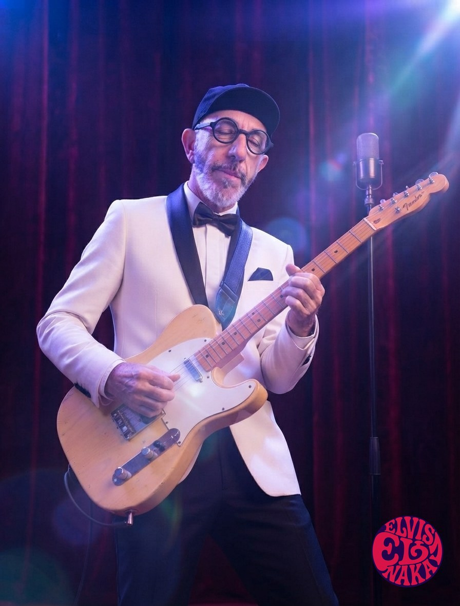
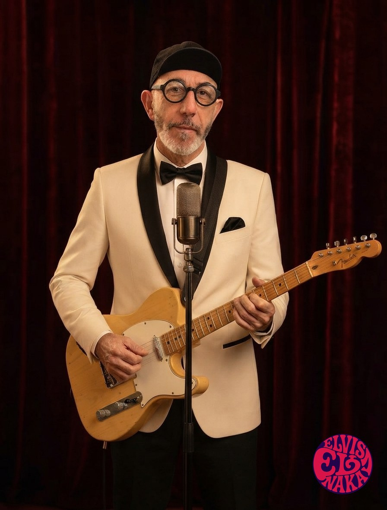

Bailo mal

Bailo mal
«Nadie en esta pista se lo toma tan en serio como yo.» El himno torpe de quien no aprendió a bailar... y lo intenta igual.
Para bailar, pincha aquí ↓
Bailar mal
La letra

Entre bombones
«Un lobo perdido en la confitería.» La canción que da nombre al disco: el tipo duro deshaciéndose, con armónica y una ceja levantada.
Para escucharla, pincha aquí ↓
Entre bombones
La letra
Las nueve canciones
El disco
El que salió del pasillo
Nadie sabe su nombre real. Se sabe que creció en un piso donde se hablaba a gritos, que heredó una colección de vinilos y un silencio, y que un día se fue con los discos bajo el brazo. Hasta ahí, la leyenda.
«Entre bombones» empieza donde acaba esa historia: el día en que alguien le abrió una caja de domingo y le dijo elige. Nueve canciones de amor cantadas por alguien que no lo aprendió en casa — con torpeza, con asombro, con una ceja levantada por si acaso.
Una guitarra que suena a local de ensayo, una armónica de andar por casa, y esa voz rota que ahora, por primera vez, canta cosas buenas. Le cuesta. Por eso emociona.
Las letras
Ternura con una ceja levantada
Aquí nadie dice «te quiero» de frente. Se dice con una lavandería que centrifuga inviernos, con un baile torpe en el salón, con un lobo perdido en una confitería. La escuela de siempre — decirlo todo sin decir nada — puesta, por una vez, al servicio de las buenas noticias.
Y yo que sabía aguantar de todo...
menos esto, menos esto. — «Entre bombones»
Debajo de la dulzura, la sombra de siempre sigue ahí: hay una canción para el pájaro que no llegó al verano, y otra para la primera mañana en calma de su vida. Este disco no borra el pasado. Lo saca a bailar.


Cómo se hizo
Dos caras, una voz
El disco se grabó como los vinilos que le enseñaron a vivir: con dos caras. La cara eléctrica — garage nervioso pero contenido, riffs con mordida, estribillos que se cantan a la primera. Y la cara desnuda — una guitarra, una habitación, el pie marcando el suelo, y la sensación de que estás sentado a dos metros.
Ninguna canción se pulió más de la cuenta. Se dejaron las respiraciones, el aire de la sala, algún roce. La regla fue la de siempre: quitar todo lo que no fuera verdad. Lo que quedó es crudo y luminoso a la vez — como enamorarse viniendo de donde él viene.
El título hace una reverencia a un disco del 67 que sonaba en el cuarto del fondo. Los que sepan, sabrán.
Galería
La función
